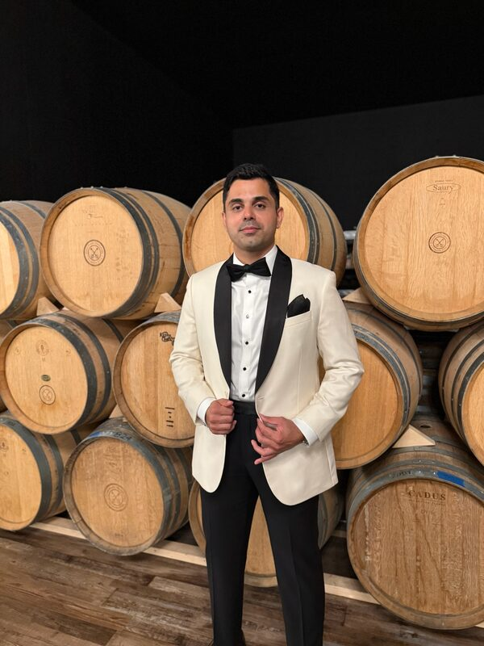

Abolfazl (Arash) Sodagartojgi
PhD Candidate in Statistics
Rutgers University · Highland Park, NJ
About
I am a PhD Candidate in Statistics at Rutgers University, developing interpretable statistical methods for high-dimensional time-series data. My research centers on identifiable dynamic factor models, sparse factor transitions, Bayesian inference, and state-space estimation, with applications to environmental and economic forecasting. I have advanced to doctoral candidacy, with my dissertation proposal approved by committee. I have three-plus years of prior quantitative finance experience at Rabobank (New York), building forecasting and risk-management tools for derivatives portfolios.
Alongside my dissertation research, I serve as a Statistical Consultant at Rutgers' Office of Statistical Consulting, advising faculty, researchers, and graduate students on study design, power analysis, and data analysis across disciplines.
My current interests include dynamic factor models and sparse state-space inference; VAEs, flows, and diffusion models; causal inference in finance and healthcare; and machine-learning-based stochastic weather generators for renewable energy.
Research
Dynamic Factor Models
Identifiable DFMs with episodic factor activation and efficient MAP-EM / Kalman filtering.
Deep Generative Models
VAEs, normalizing flows, and diffusion models for complex temporal structure and stochastic volatility.
Causal Machine Learning
Combining causal inference with deep learning for order-book dynamics and clinical EEG.
Stochastic Weather Generators
Minute-level wind-vector generation trained on multi-decade atmospheric datasets.
Publications
-
Deep learning-based retinal abnormality detection from OCT images with limited data
For a complete and up-to-date list, see my Google Scholar profile.
Honors & Awards
- 2022–2027Full 5-Year PhD Scholarship, Rutgers University
- 2024Best Teaching Assistant Award, Rutgers Statistics
- 2024Graduate Student Research Award, Rutgers Statistics
- 2025JSM Travel Grant, American Statistical Association
- 2025NBER–NSF Time Series Conference Travel Award
- 2023Best Qualifying Exam Performance, Rutgers Statistics
- 2019College of Business Valedictorian, JMU — Summa Cum Laude, Phi Beta Kappa
Teaching & Service
Teaching Assistant, Rutgers University (2022–Present)
Statistical Inference · Linear Regression · Time Series Analysis · Machine Learning. Recipient of the Best Teaching Assistant Award (2024).
Statistical Consultant, Office of Statistical Consulting (2023–Present)
Department of Statistics, Rutgers University. Provide statistical consulting to Rutgers faculty, researchers, and graduate students under faculty supervision — study design, power analysis, data analysis, and interpretation of results — and advise on statistical methodology for grant proposals and manuscripts across disciplines.
Presentations & Professional Service
- Poster presentation, “Dynamic Factor Model with Sparse Factor Transitions,” 2025 NBER–NSF Time Series Conference, Rutgers University, New Brunswick, NJ (Sep 19–20, 2025)
- Peer reviewer, Computer Methods in Biomechanics and Biomedical Engineering (Taylor & Francis), 2026
- Conference organization: assisted with organizing The Design and Analysis of Experiments (DAE) Conference 2026, Rutgers University, Piscataway, NJ (May 19–21, 2026)
Curriculum Vitae
Download full CV (PDF) Last updated September 2026
Corporate Derivatives Sales Analyst, Rabobank NY (Aug 2019–Mar 2021)
Statistical Consultant, Rutgers Office of Statistical Consulting (Sep 2023–Present)